Quantitative metrics that summarize the goodness of a telescope observation schedule, validated on real DES data, packaged for the group toolkit.
Phase: v0.1 — foundations: t_eff reconstructed, calibrated and validated; blur metric decomposed; per-night schedule scores on real DES nights
Data: 74,323 DES survey exposures
(2013-08-31 to 2019-01-10), 615 nights scored.
Last generated: 2026-07-06T14:42:36+00:00
t_eff = η² · (FWHM_fid / FWHM)² · (b_dark / b)
Blur, clouds, and bright sky each discount an exposure's clock time. t_eff is the surviving fraction: a 90 s exposure with t_eff = 0.4 detected faint objects as well as 36 s taken in perfect conditions would have. A schedule's headline quality is how much of the wall-clock night it converted into these effective seconds.
score = 100 · (0.50·yield + 0.25·quality + 0.25·pointing). 100 would need zero idle seconds, perfect sky, and everything at zenith — unattainable. Read it relative to DES (median 64):
| score | meaning (anchored on 615 real DES nights) |
|---|---|
| 75+ | excellent (top ~16% of DES nights): mean t_eff at or above 1.0 — conditions better than fiducial; ~85 is the realistic full-night ceiling |
| 65-75 | good working night: t_eff ~0.8, essentially every exposure usable |
| 55-65 | ordinary: the DES median night scores 64 |
| 40-55 | rough: exposures mostly usable but lots of idle time |
| <40 | wrecked (bottom ~10%): clouds ~0.6 mag, only ~1/4 of exposures worth keeping — mostly weather's fault, not scheduling |
| our t_eff vs DES pipeline (log-correlation) | 0.9522 |
| median error | 15% |
| same, with naive paper constants | 24% |
| automated tests | 4/4 passing |
| median night score | 64.1 |
| band | fiducial FWHM (") | sky exponent | keep threshold | median delivered |
|---|---|---|---|---|
| g | 1.119 | 0.589 | 0.2 | 1.14" |
| r | 0.991 | 0.487 | 0.3 | 1.0" |
| i | 0.932 | 0.254 | 0.3 | 0.93" |
| z | 0.871 | 0.213 | 0.3 | 0.92" |
| Y | 0.904 | 0.881 | 0.2 | 0.95" |
The scheduler's own behavior hides the physics in the data. Pooled, blur appears to improve away from zenith (fit exponent -0.234) because DES pointed at high airmass only in good seeing (correlation -0.361). Comparing within single nights recovers the physical law (exponent 0.229, theory +0.6). Consequence: schedulers cannot be judged from logged outcomes naively — conditions and decisions must be separated, which the metrics here do.
| night | score | exposures | mean t_eff | usable | median airmass |
|---|---|---|---|---|---|
| 2019-01-08 | 98.3 | 34 | 1.693 | 100% | 1.055 |
| 2015-09-01 | 97.8 | 27 | 1.532 | 100% | 1.08 |
| 2018-11-26 | 96.2 | 218 | 1.659 | 100% | 1.15 |
| 2018-02-21 | 96.0 | 96 | 1.43 | 99% | 1.155 |
| 2017-12-21 | 93.8 | 63 | 1.317 | 100% | 1.28 |
| night | score | exposures | mean t_eff | usable | median airmass |
|---|---|---|---|---|---|
| 2018-09-11 | 19.2 | 24 | 0.021 | 0% | 1.31 |
| 2016-09-14 | 20.8 | 27 | 0.068 | 0% | 1.19 |
| 2014-01-17 | 21.9 | 26 | 0.161 | 0% | 1.37 |
| 2014-10-14 | 22.9 | 77 | 0.08 | 1% | 1.19 |
| 2015-09-15 | 23.3 | 57 | 0.054 | 0% | 1.09 |
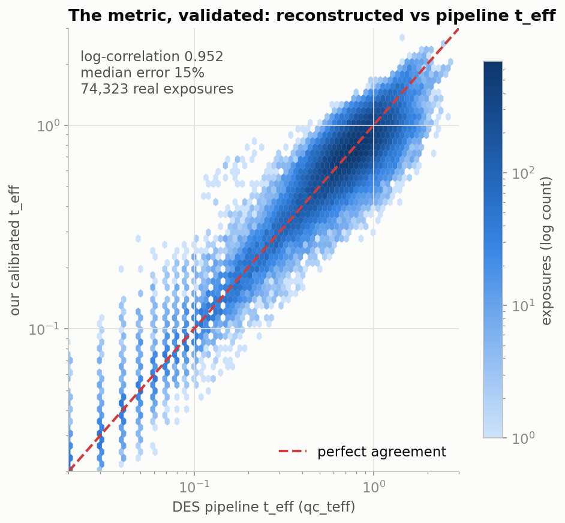
Our calibrated metric against DES's own quality pipeline across 74,323 exposures — log-correlation 0.952.
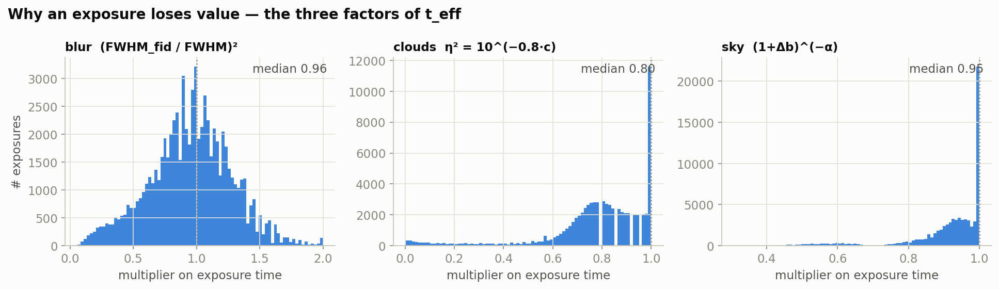
Blur, cloud and sky terms as multipliers on exposure time.
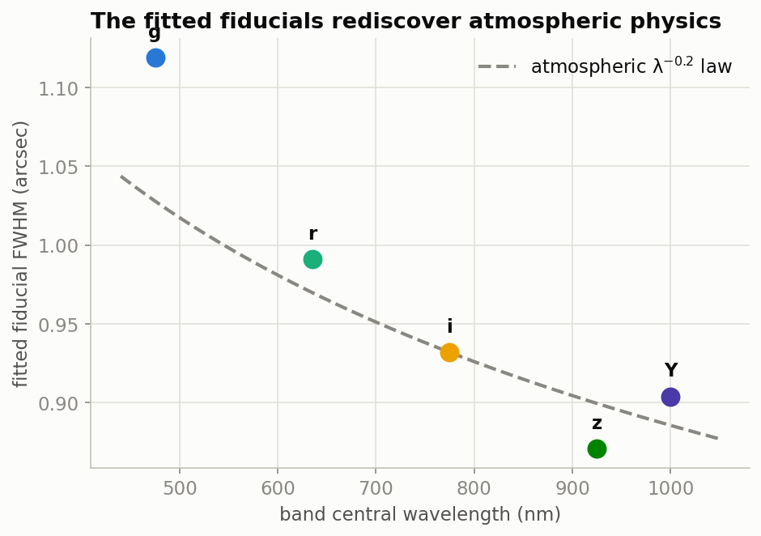
The per-band fiducial FWHM fit on data follows the atmospheric wavelength^-0.2 law.
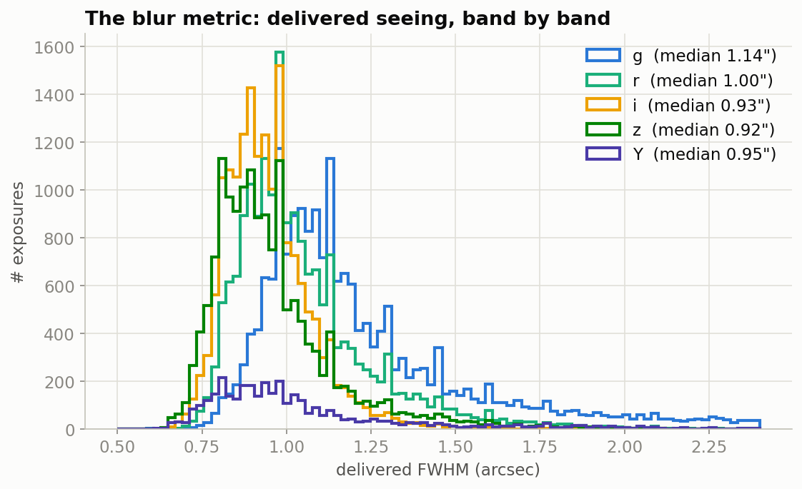
Blur distributions in each DECam filter; redder bands are sharper.
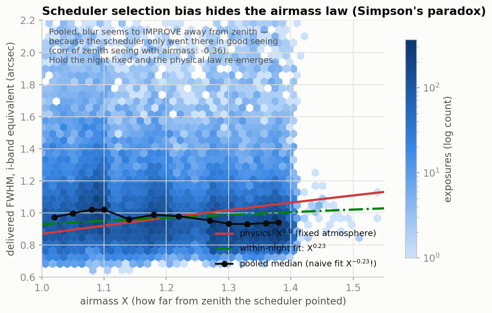
Pooled, blur seems to improve with airmass — because the scheduler pointed low only in good seeing. Holding the night fixed recovers the physical X^0.6 trend. Evaluating schedulers from logged data is confounded by the logging policy.

Median delivered FWHM over the DES footprint.
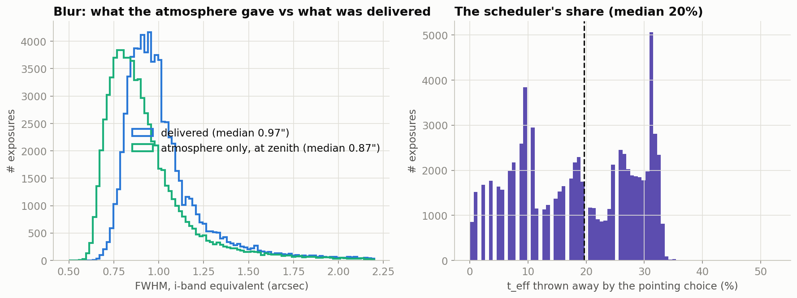
Zenith seeing (uncontrollable) vs delivered blur, and the t_eff fraction lost to pointing.
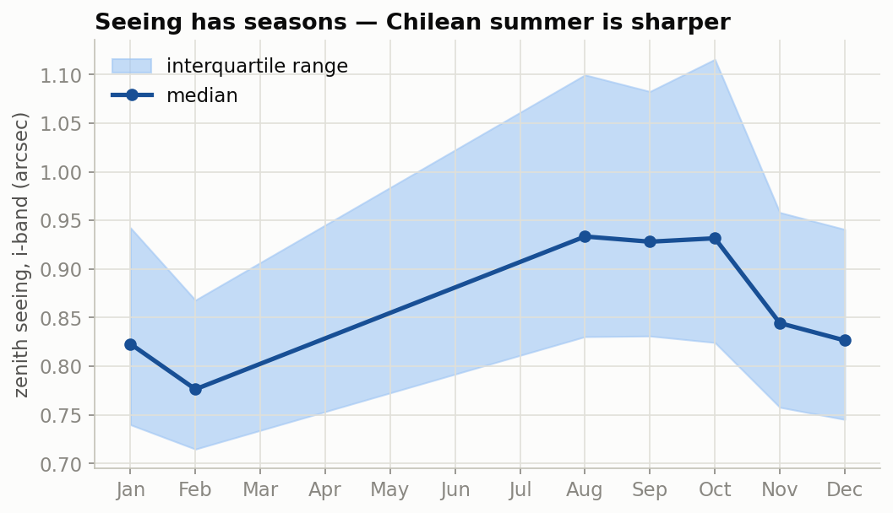
Monthly zenith seeing: Chilean summer delivers sharper images.
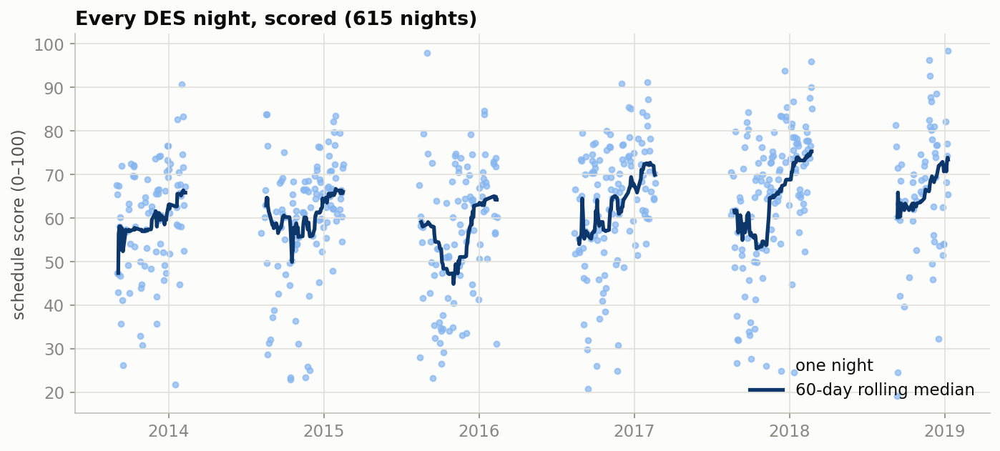
Composite schedule score for each DES night with a 60-day rolling median.
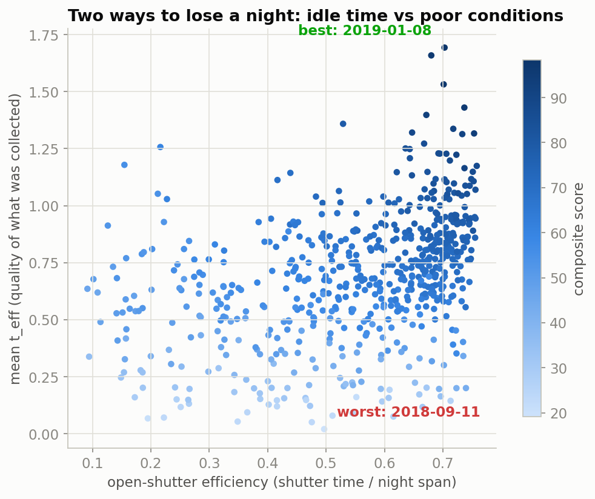
Idle time vs poor conditions: two independent ways a night is lost.
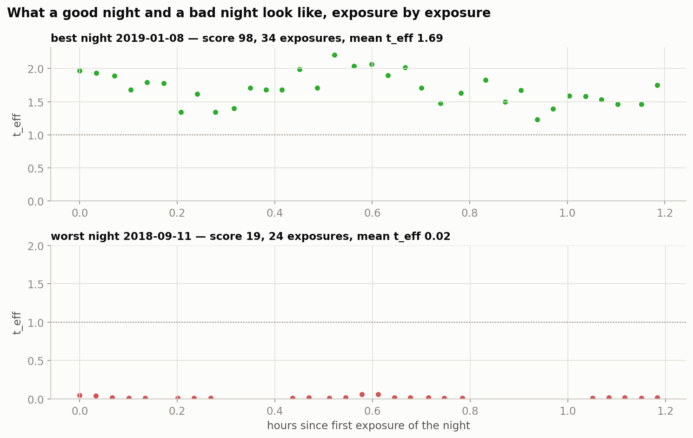
Exposure-by-exposure t_eff through the highest- and lowest-scoring nights.
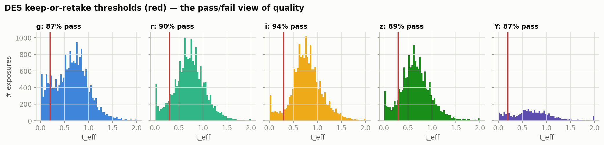
Fraction of exposures meeting DES survey thresholds per band.
Regenerate: python3 scripts/make_figures.py && python3 scripts/make_site.py
| Tests: python3 tests/test_metrics.py
| Fancier view: dashboard.html
References: Neilsen et al. 2019 (DES observing strategy, defines t_eff);
Terranova et al. 2023, arXiv:2311.18094 (t_eff as offline-RL reward);
Kumar et al. 2020 (Conservative Q-Learning).